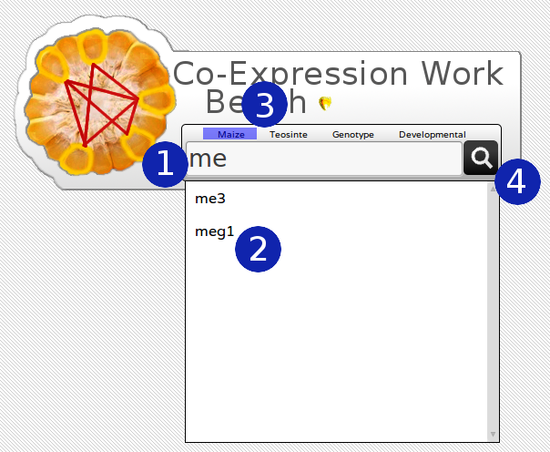
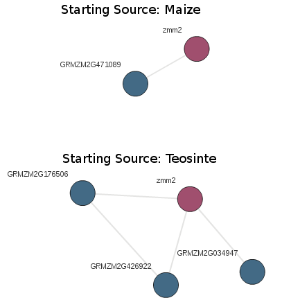
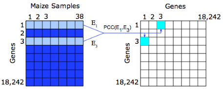

Upon visiting the home page you will be welcomed with a home page for COB. This simple interface is designed to get you started right away with a simple query box. Querying for your gene of interest is intuitive and easy.
Query BoxAs you start typing the name of a gene in the box, COB will display a list of available genes it has in its database. For example, typing "me" in the query box will produce a list containing the genes "me3" and "meg1". This is depicted by numbers 1 and 2 in Figure 1 respectively. You can choose to either finish typing the suggested gene name or click on the suggested genes to add the gene to your query list. The suggested list of genes is exclusive meaning that non-suggested genes will not be return a result from the database. For example, a hypothetical gene called "cool1" will not return a suggestion and thus will not return a hit from the database. Genes without a common identifier such as GRMZM2G000014 or AC147602.5_FG002 are also suggested when being typed but will not be suggested otherwise. Invalid gene names will be ignored when querying the database and will not be shown in the result. Any valid genes that were entered but without interactions in the database will not be shown in the resulting network and you will be notified of this event.
In a more exploratory fashion, instead of typing in known genes, by clicking an empty query box, you will be presented with a complete list of common genes that are available to query. This allows you to browse available genes and make fast selections based on an exhaustive list of what genes are available rather than typing them in individually. Only genes with common names will be presented, but genes with GRMZM and AC identifiers can be typed in manually.
Multiple genes can be entered by separating them with a comma or by simply clicking multiple suggestions. Suggestions will be made for the last gene in the comma separated list. As with single genes, any invalid genes will be ignored in the input.
Starting SourceOne of the most important options when querying the database is your starting source. Currently there are four options on types of interactions you can view shown by number 3 in figure 1. The 'maize' and 'teosinte' options include expression data exclusively from lines representing each sub-species. The 'genotype' options encompasses expression from maize and teosinte. For example, if an interaction had an average score of +3 in maize and an average of -3 in teosinte, it would have a score of 0 in the genotype network. The 'developmental' dataset includes interactions derived from developing plants only, this network should be enriched for processes that occur during plant development.
The reason why the starting source is so important is because the resulting network will be composed of genes that are represented in that context. As shown in Figure 2, even though the query gene is the same, in the case zmm2, the number and names of co-expressed genes is different as well as the number of interactions. The context of the current network will always be visible in the status bar at the bottom of the screen.
As we will see later, it is possible to see which edges are conserved as well as different between starting datasets. Once a network is loaded it is possible to see what interactions are present in another context. It is important to remember that while the interactions will change, the genes that are visible are in the context of your starting network. It is much different to query a network with, say 'myb2' in teosinte and examine the interactions in the maize context than it is just query the maize network with 'myb2'.
Viewing A NetworkOnce a query has been entered and a information has been selected clicking the search button designated with a looking glass (number 4 in Figure 1) or simply hitting the enter key on your keyboard will initiate your request. One of two events will occur once a request has been sent. If there are no data that match your query a message will alert you to the matter with a message in the bottom left hand corner. If there exists a network matching your query, it will be loaded automatically into the background of the page. Depending on the size of the network, it could take some time to load, a splash page will let you know that COB is working in the background.
Once a network has been loaded there will be a new toolbox that loads on the right portion of the page. Summary information for the network will be loaded into the bottom footer section of the page. This shows you how many nodes (genes) are in the network as well as the number of interactions (edges). You will also be reminded of your current network context.
Occasionally there will be more genes returned from the database than are reasonably displayed on the screen. A message will be displayed letting you know of the situation. The genes that are omitted are the least relevant genes pertaining to the query, meaning that they have the smallest cumulative interaction score with the genes that were entered. In future versions there will be a way to display omitted genes.
The Network and Scoring AlgorithmsOnce the network is loaded it will be displayed graphically on the screen replacing the query box. Genes that were queried are shown to be red, genes that were highly co-expressed with the query genes are shown in blue. An interaction represents co-expression between two genes in the network. The score is generated by taking the Pearson correlation coefficient between genes in a specific network, for example the Maize network as illustrated in Figure 3. These scores are fisher transformed and normalized (z-score) so the magnitudes of two scores are consistent across different networks. This allows one to compare sub-networks directly as a score of 3 in one network (e.g. Maize) is essentially the equivalent of a score of 3 in another network (e.g. Teosinte).(Citation for Romans Paper) The database stores only interactions with a z-score about 3.0 or 3 standard deviations from the mean correlation between two nodes in the network.
As previously mentioned, much of the information in the network that is generated depends highly on which database you choose to start in. An equally subtle aspect of network generation is the number of query genes you provide. If there were multiple genes that were queried scores are aggregated additively. This means our scoring algorithm will give preference to results that have relation to multiple query nodes. For example, suppose you have two query genes: myb2 and taf1. If two genes are returned from the database, A and B, with the following scores:
| myb2 | taf1 | Total Score | |
|---|---|---|---|
| Result A | 0 | 5 | 5 |
| Result B | 3 | 3 | 6 |
In this case result B would be given a higher preference since it is, overall, more related to the query genes. Although result A's z-score with taf1 is two standard deviations (z-score) above B with relation to taf1 preference will be given to result B. This scenario only becomes important when limiting the number of genes that are displayed in the network. Were the network limited to displaying only 30 genes and A was the 31st most relevant result, it would not be displayed.
Menu Items - ToolboxHaving a loaded network, you are greeted with the main tab in the menu. This tab encapsulates the parameters you entered in the query box on the starting page. Queries can be edited here and re-submitted. There is also an added control for how many genes are displayed in the network. This is generally used to cull the amount of visible genes in the network reducing results that are generally referred to as 'hairballs'.
There are also multiple choices for submitting new queries. The button labeled 'Submit' is akin to the functionality on the main page, the button labeled 'ReQuery Selected', however, will use genes that have been selected or highlighted in the network as query genes. Highlighted genes have a black background are displayed with a yellow halo or glow around them and will move as a unit when dragged. Since the network can be annotated in many different ways as will be described later in this document, different colors surrounding the gene represent different things. In this case, a yellow halo always means that the gene or group of genes has a focus in the network and act as a sort of group capable of such actions as requerying. A single gene can be highlighted by simply clicking it (which also triggers events described in detail later).
Multiple genes can be selected by clicking the background of the network and holding. Dragging the cursor while holding produces a selection area. Any gene inside the boundary of the selection area when the mouse button is released will become highlighted.
Exploring Individual GenesOne of the main features of COB is to dynamically load only the information that is needed at any given moment. This minimizes the amount of visible content to that which is relevant while still providing convenient access to more content via side loading of complementary data. We expect our users to use their own digression on interpreting the results of the relationships constructed by the network. Our mission is only to provide and a framework for access and organize the data in a way that they are easy to handle in small meaningful amounts while providing a gateway for different combinations of data can be viewed easily and generated quickly. We also aim to put the data in the most biologically relevant context that is useful for those in the Maize community.
The loaded co-expression network best depicts the relation of genes correlated with your query. The amount of information that can be displayed on the screen at once is limited especially with large networks.. If you find an interesting result gene in the network, additional information can be retrieved by clicking on a gene.
Once clicked, the menu will automatically change to the 'Explore Genes' tab. This tab highlights data that is specific to a single gene. A green border will accompany any gene that has its details loaded. Remember that clicking a gene will also give it focus in the network, but if you were to click elsewhere on the screen focus would be lost but the green designation will remain on the node whose details are currently loaded. This is meant to remind you that while focus may be on a single node, multiple nodes, or no nodes the details tab will always show information on the gene that is highlighted in green.
Gene IdentifiersUnder the Gene heading, there will be a list of various gene names. This currently includes any common name as well as the maize GDB identifier.
Locus InformationBeneath the gene heading is locus information. This includes the chromosome as well as the starting point of the gene. A small genome browser is also included. The red gene is the currently detailed gene, not to be confused with a query gene. By clicking and dragging the genome browser, you can view upstream and downstream of the detailed gene. Any gene that is present in the loaded network will be blue instead of the normal green used for genes that are strictly near the same locus. A genes name can be shown by hovering the mouse over the colored block. Approximately one megabase will be shown in the genome browser; 500Kb on upstream and 500 Kb downstream of the detailed node.
NeighborsOne of the main features of the details tab is to view the immediate neighbors of any specific gene in the network. A neighbor is defined as a gene that is co-expressed with the query genes or genes as shown in figure 3. The box with the heading 'Neighbors' shows just that. The simple table shows the names of the neighbors as well as the score of the connecting interaction. The total number of neighbors is displayed at the top of the table. Clicking the table header will highlight the edges that connect a node and all of its first neighbors. To distinguish a single interaction, simply hover the cursor over the name of the neighbor and the edge in the network will be highlighted. The list is natively sorted with the highest scored interaction at the top.
Gene OntologyIf a gene has available gene ontology information, it will be loaded into the side pane when you click to retrieve details. Since GO is hierarchical, all GO annotations that are 'above' a genes most specific annotation will also be loaded. Initially, only the GO designator along with a short description will be shown, but more information can be displayed by clicking the more button.
Aribidopsis OrthologyIn few model organisms, a significant amount of work has been done to curate descriptive and specific annotations for genes. Arabidopsis is fortunate enough to have this luxury. We took all of the 4a.53 Maize protein sequences from here as well as the Arabidopsis protein sequences from here and used BLASTP, with a minimal score of 10E-20, to compare the maize and arabidopsis sequences in order to discover orthologs. Arabidopsis annotations were then curated and are displayed inside the information pane when a genes details are loaded if a gene has an ortholog. Along with the complete description list, the Arabidopsis gene that best matched the Maize gene is shown.
Link to Maize GDB WebsiteIncluded at the bottom of the tab is a link to the maize GDB website, directly linking to the page for the gene whose details are loaded.
Explore Genes TabMany operations that have a context that spans the entire network. Under the heading, "Explore Network" there are features that allow you to manipulate and extract information from the entire set of genes displayed in the network.
Change Visible LabelsThis drop down box allows you to change which labels are used to designate the genes in the network. This allows you to quickly overlay useful information on the network such as annotations or locus information. While this feature does not provide conclusive evidence towards what is happening in the network, it is nice to view and explore the network in different ways. This is especially useful to separate genes in the network into sub groups based on a label for re-querying or to allow distinction.
View Specific LocusMany times the network will be saturated and changing labels to separate out genes by locus becomes impossible. Using the dialog under the 'view specific locus' options allows you not only to highlight genes by chromosome, but also allows you to enter a range of base pairs to further restrict your search. You also are presented with an options to add more loci, view an individual locus, or to view all entered loci.
GO EnrichmentGo enrichment is a common method to view what functions are over represented in a network. By clicking the 'Load Enrichment' button, the browser will calculate which GO terms are enriched in the network of genes. If any GO terms are over represented in the network, they will be populated in the GO enrichment box. Included information such as the parameters used to calculate the p-value as well as descriptions of the terms are included.
By hovering over the GO Term box, the genes that are responsible in the network will be designated by a blue halo. This allows for ease of re-querying a sub-network of genes.
Change Visible InteractionsIt was one of our goals in this site to allow users to view co-expression values in different contexts. When asked to input query genes, users are also asked to choose a network. By being able to change which co-expression interactions are visible, it is possible to see if a network of genes retains interactions from one network to another. We leave it up to the user to interpret these results, taking caution to remember that only interactions are substituted, never genes. This meas that going from Maize to Teosinte will result in a different network that from Teosinte to Maize.
Change Network LayoutThis options simply reorganized the genes in the network to popular layout schemes. No information is changed when this feature is used.
Saving and Other Tools ToolbarThe toolbar displayed at the top of the page is for features that are not necessarily tightly integrated with the network. Clicking the COB logo will bring you back to the main screen, effectively starting the page from scratch.
FullscreenThe fullscreen button toggles whether the information pane is visible or not. This is useful for manipulating the positions of the genes in a very dense network.
SavingThe save button brings up a dialog that allows for network exportation. There are a variety of formats that are available for saving your work. The format drop down menu allows you to choose which format the network will be saved in.
Choosing "PNG Image" is simply an image of the network as it was shown on your screen. This is useful for saving the network for figures or as a visual reference.
Both "XGMML" and "GraphML" are plain text formats that are compatible with the full version of cytoscape. XGMML is the most lossless version of your current network as it preserves such all features of the network. Such features are not limited to node color, labels, and position. When imported into another network rendering program, the layout and style should mirror the network you built precisely. GraphML only preserves the relationships between genes as well as the interactions between them. Importing into another network rendering program will only mirror which genes and interactions were present, using its own discretion on where the genes are positioned and what colors the genes are.
The tab delimited option will export a text file of the nodes that are displayed in the network. This format is useful for saving portions of the generated network for spreadsheet programs or custom scripts. Upon selecting this option, the checkboxes under the 'additional columns' heading become active. These options generate additional columns in the text file that might not be currently visible in the network. An example would include locus information.
Depending on what you choose, clicking the generate button will start the process of fetching the selected information. Changing your parameters and clicking 'Generate' again will refresh your result. Hitting escape or clicking close will bring you back to the regular interface.
AboutHere is information about us and a link to our main lab website. Also shown is an area for feedback and bug reporting.